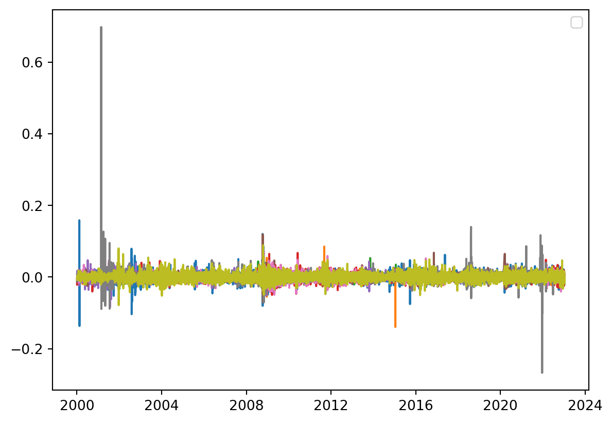
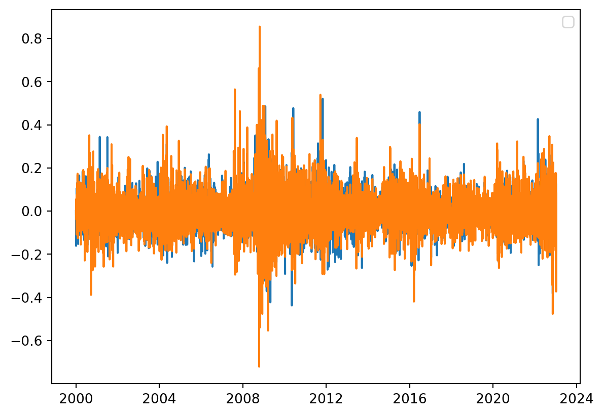
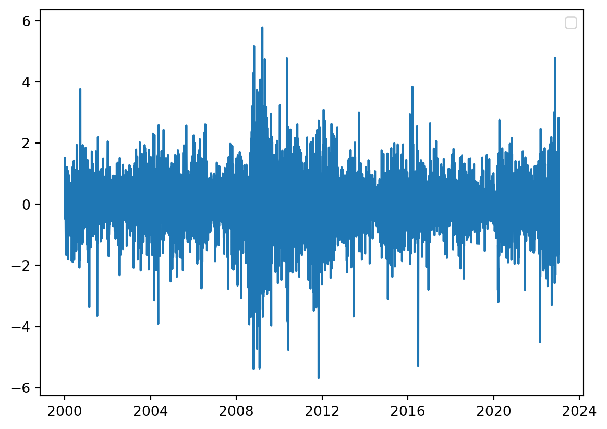

import pandas as pd
import numpy as np
import matplotlib.pyplot as plt
import eurostat
from datetime import datetime
import statsmodels.api as smThis post is to apply a Dynamic Factor Model to uncover common trends in currencies as well as idiosyncratic shocks that some countries might be facing.
\[ \begin{aligned} x^{i}_{t} = \alpha^{i} + \sum_{j}{\beta^{i}_{j} f_{j} + \varepsilon^{i}_{t}}, \quad i = 1 \dots n \end{aligned} \]
df = eurostat.get_data_df('ert_bil_eur_d', flags=False)
df.rename(columns = {'currency\\TIME_PERIOD': 'currency'}, inplace = True)
list_statinfo = ['AVG']
list_currency = ['AUD', 'BRL', 'CAD', 'CHF', 'CNY', 'CZK', 'GBP', 'HUF', 'IDR', \
'JPY', 'MXN', 'NZD', 'PLN', 'TRY', 'USD', 'ZAR']
df = df[(df['statinfo'].isin(list_statinfo)) & \
(df['currency'].isin(list_currency))]
df.drop(columns = ['unit', 'statinfo', 'freq'], inplace = True)
df = pd.melt(df, id_vars = ['currency'], var_name = 'date')
df['date'] = df['date'].apply(lambda x: datetime.strptime(x, '%Y-%m-%d'))
df.set_index(['date', 'currency'], inplace = True)
df = df.unstack()
df[('value', 'EUR')] = 1
df = df.mul(1 / df.loc[:,('value', 'USD')], axis = 0)
df.drop('USD', axis = 1, level = 'currency', inplace = True)
list_currency.remove('USD')
df = df.stack()
df.reset_index(level = 'currency', inplace = True)
df = df.pivot(columns = 'currency', values = 'value')
#df = df.resample('M').last()
df.tail()| currency | AUD | BRL | CAD | CHF | CNY | CZK | EUR | GBP | HUF | IDR | JPY | MXN | NZD | PLN | TRY | ZAR |
|---|---|---|---|---|---|---|---|---|---|---|---|---|---|---|---|---|
| date | ||||||||||||||||
| 2023-01-05 | 1.463541 | 5.382511 | 1.350439 | 0.928120 | 6.873220 | 22.665786 | 0.943307 | 0.832969 | 374.379775 | 15605.197623 | 132.959155 | 19.376663 | 1.587775 | 4.405245 | 18.770116 | 17.097444 |
| 2023-01-06 | 1.484762 | 5.336571 | 1.364857 | 0.939429 | 6.861429 | 22.908571 | 0.952381 | 0.842619 | 378.057143 | 15684.095238 | 134.571429 | 19.299524 | 1.608476 | 4.471429 | 18.768095 | 17.342095 |
| 2023-01-09 | 1.444091 | 5.280011 | 1.336855 | 0.922307 | 6.782536 | 22.428945 | 0.934929 | 0.823186 | 371.400524 | 15577.711294 | 132.152206 | 19.149682 | 1.565165 | 4.390707 | 18.775617 | 17.021223 |
| 2023-01-10 | 1.456309 | 5.266343 | 1.341229 | 0.923995 | 6.782803 | 22.366875 | 0.932575 | 0.823743 | 372.097361 | 15550.750723 | 132.351021 | 19.145668 | 1.574093 | 4.378439 | 18.777954 | 17.071155 |
| 2023-01-11 | 1.450451 | 5.195869 | 1.342607 | 0.927422 | 6.774635 | 22.356937 | 0.930492 | 0.825095 | 371.359449 | 15457.653299 | 132.697497 | 19.071090 | 1.573648 | 4.356472 | 18.776682 | 17.011910 |
list_em = ['BRL', 'CHF', 'CZK', 'HUF', 'IDR', 'MXN', 'PLN', 'TRY', 'ZAR']
list_dm = list(set(list_currency) - set(list_em))
factors_mq = {x: ['usd', 'em'] if x in list_em else ['usd', 'dm'] for x in list_currency}df_est = df.loc['2000-01-01':].copy()
endog_em = df_est[list_em].pct_change()
endog_dm = df_est[list_dm].pct_change()
plt.plot(endog_em)
plt.legend()
model_em = sm.tsa.DynamicFactor(endog_em, k_factors=1, factor_order=1, error_order=1)
result_em = model_em.fit(disp=False)
model_dm = sm.tsa.DynamicFactor(endog_dm, k_factors=1, factor_order=1, error_order=1)
result_dm = model_dm.fit(disp=False)No artists with labels found to put in legend. Note that artists whose label start with an underscore are ignored when legend() is called with no argument./Library/Frameworks/Python.framework/Versions/3.10/lib/python3.10/site-packages/statsmodels/tsa/base/tsa_model.py:471: ValueWarning: A date index has been provided, but it has no associated frequency information and so will be ignored when e.g. forecasting.
self._init_dates(dates, freq)/Library/Frameworks/Python.framework/Versions/3.10/lib/python3.10/site-packages/statsmodels/base/model.py:604: ConvergenceWarning: Maximum Likelihood optimization failed to converge. Check mle_retvals
warnings.warn("Maximum Likelihood optimization failed to "/Library/Frameworks/Python.framework/Versions/3.10/lib/python3.10/site-packages/statsmodels/tsa/base/tsa_model.py:471: ValueWarning: A date index has been provided, but it has no associated frequency information and so will be ignored when e.g. forecasting.
self._init_dates(dates, freq)/Library/Frameworks/Python.framework/Versions/3.10/lib/python3.10/site-packages/statsmodels/base/model.py:604: ConvergenceWarning: Maximum Likelihood optimization failed to converge. Check mle_retvals
warnings.warn("Maximum Likelihood optimization failed to "
df_est['factor_em'] = result_em.factors.smoothed[0]
df_est['factor_dm'] = result_dm.factors.smoothed[0]
endog_global = df_est[['factor_em', 'factor_dm']]
plt.plot(endog_global)
plt.legend()
model_global = sm.tsa.DynamicFactor(endog_global, k_factors=1, factor_order=1, error_order=1)
result_global = model_global.fit(disp=False)No artists with labels found to put in legend. Note that artists whose label start with an underscore are ignored when legend() is called with no argument./Library/Frameworks/Python.framework/Versions/3.10/lib/python3.10/site-packages/statsmodels/tsa/base/tsa_model.py:471: ValueWarning: A date index has been provided, but it has no associated frequency information and so will be ignored when e.g. forecasting.
self._init_dates(dates, freq)/Library/Frameworks/Python.framework/Versions/3.10/lib/python3.10/site-packages/statsmodels/base/model.py:604: ConvergenceWarning: Maximum Likelihood optimization failed to converge. Check mle_retvals
warnings.warn("Maximum Likelihood optimization failed to "
df_est['factor_global'] = result_global.factors.smoothed[0]
plt.plot(df_est['factor_global'])
plt.legend()No artists with labels found to put in legend. Note that artists whose label start with an underscore are ignored when legend() is called with no argument.<matplotlib.legend.Legend at 0x13ebeb6d0>
# model = sm.tsa.DynamicFactorMQ(
# endog_m, endog_quarterly=endog_q,
# factors=factors, factor_orders=factor_orders,
# factor_multiplicities=factor_multiplicities)
print(df_est[['factor_em', 'factor_dm', 'factor_global']].tail(15))
from scipy.stats import pearsonr
corr, _ = pearsonr(df_est['factor_em'], df_est['factor_dm'])
print('Pearsons correlation: %.3f' % corr)currency factor_em factor_dm factor_global
date
2022-12-21 -0.059927 -0.081435 0.735832
2022-12-22 -0.022280 0.005360 0.186527
2022-12-23 -0.002162 0.017472 -0.014107
2022-12-27 0.041217 -0.045417 -0.248542
2022-12-28 0.022716 -0.107312 0.049828
2022-12-29 -0.069029 0.119988 0.364497
2022-12-30 -0.017344 -0.126943 0.454206
2023-01-02 -0.000055 0.011553 -0.005445
2023-01-03 0.156686 0.176762 -1.906100
2023-01-04 -0.145457 -0.232314 1.955902
2023-01-05 0.014978 0.019381 -0.183115
2023-01-06 0.127845 0.171858 -1.619197
2023-01-09 -0.202377 -0.372399 2.822352
2023-01-10 -0.006585 0.084640 -0.153977
2023-01-11 -0.029203 -0.029067 0.331555
Pearsons correlation: 0.698